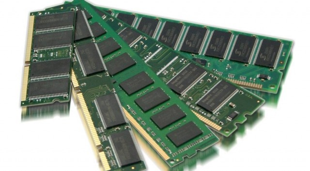

Differenza tra RAM dinamica e RAM statica
Ram dinamica
La ram statica come dice il nome non ha bisogno di refresh,
ci scrivi i dati e li restano finchè cè alimentazione.
Sono veloci e non hanno latenze.

Ram statica
La ram dinamica ha invece bisogno ogni tot tempo,
di solito microsecondi, di rinfrescare la carica dei condensatori che sono le celle di memoria vere e proprie,
altrimenti la tensione scende sotto una determinata soglia e il dato si corrompe e non è più leggibile.
Ci sono delle latenze maggiori.